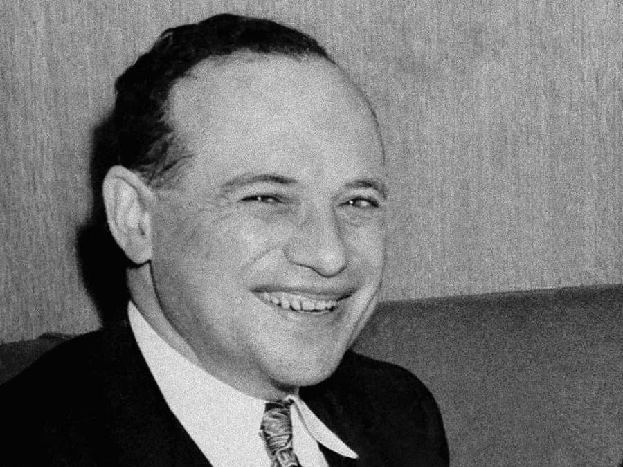

Бенджамін Грем (Грехем), засновник Graham-Newman Partnership

Бенджамин Грэхем родился 8 мая 1894 года в Лондоне, его настоящая фамилия была Гроссбаум (Grossbaum). Когда Грэму исполнился один год, его семья эмигрировала в Соединённые Штаты Америки. В Нью-Йорке отец Бенджамина открыл фирму, занимавшуюся импортом фарфора, керамики и антиквариата из Австрии и Германии.
Когда Бенджамину было девять лет его отец умер. Личность Бенджамина Грэхема сцементировало пронизанное бедностью воспитание в Нью-Йорке, где для выживания на улице он должен был больше использовать свои умственные способности, чем мускулы.
Грем – відомий американський економіст і професійний інвестор. Його часто називають батьком вартісного інвестування.
Кар’єра Бенджаміна Грєма почалася з посади посильного в брокерській фірмі Newburger, Henderson & Loeb. з зарплатнею у $12 в тиждень. Крім прямих обов’язків, він повинен був відзначати курси облігацій і акцій на котировочній дошці. До 1919 р. заробітна плата Грема збільшилась до $600 тис.
У 1926 р. Бенджамін разом з Джеромом Ньюменом організували інвестиційне товариство. До речі, саме ця фірма тридцять років потому найняла на роботу Уоррена Баффета.
У 1928-1956 рр., займаючись справами компанії Graham-Newman, Грем одночасно викладав курс “Фінанси” в Колумбійському університеті.
Грем закликав інвестиційне співтовариство провести фундаментальну відмінність між інвестиціями і спекуляціями. Інвестицію він визначав як операцію, засновану на ретельному аналізі фактів, перспектив, безпеки вкладених коштів і достатній дохід. А все інше називав спекуляцією.